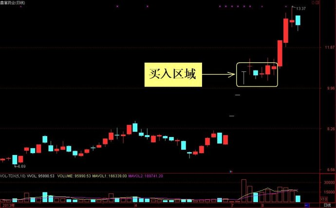

第373篇•重组与并购——主板的新机会
谷为陵
在创业板持续走高的情况下，沪市主板却是死气沉沉，毫无生气，也看似毫无机会。但实际上，沪深主板现在是暗流涌动，有一个系统性的机会正在开始酝酿，这个机会就是重组与并购的机会。
重组与并购是市场永恒的题材，纵观沪深股市20年来的发展，可知因重组与并购造就的大牛股和黑马股是数不胜数的。上市公司重组的动力是什么？就是为了实现利益的最大化。这个利益可分为两类：一是长期利益，通过重组与并购，可以获得行业的垄断地位，利于公司的可持续发展。比如，前几年分众传媒在连续并购框架传媒与聚众传媒后，就成为了该行业的龙头老大。二是短期利益，这集中体现在对于股价的维护上。比如，某些股票因业绩不好，股价跌得很低了，只有2～3元，这样的股票不仅丧失了再融资能力，且大股东也失去了股权增值的收益，这样的股票形同“僵尸股”了。为了让股价涨上去，仅靠“僵尸股”自身的能力已经是不行了，这时候就需要外力的推动，而最可靠的外力就是资产重组和资产注入，即注入新的价值。近期就有一个很典型的案例，那就是美都控股。该股就是一只股价长期徘徊在2元多的“僵尸股”，但该股却在7月12日公告，将以2.46元的增发价格，定增10亿股，募集资金24.6亿元，用于收购美国Woodbine
Acquiition
LLC油田。在这个利好信息公告后，该股股价连续暴涨，股价已经从2.7元涨到了5.7元，“僵尸”俨然复活了。
挖掘重组股已经成为股市里一种盈利模式，而王亚伟就是其中最典型的代表性人物。对于二级市场的参与者来说，虽然重组股的股价涨幅均很大，但要真正在这些重组股上获取很大的收益，却并非易事，这有两个原因：一是提前挖掘难，投资者很难在重组消息公告前，就能够提前挖掘出这些重组的潜力股；二是追涨难，很多重组股在利好公告后，往往会连续5～6个一字涨停板，待到股价终于打开了涨停板，能够买到了，股价离短期顶部或者中期顶部已经不远了。特别是有一些恶意的重组股，股价在重组前已经被狂炒了一番，及至重组消息公告且股价大涨后，往往就是一个长期顶部了。
那么，怎样把握重组股、增发股、并购股的交易机会呢？我认为需要把握如下六点：
一是在股价底部公告重大利好的，则参与后获利的可能性要远远高于那些在股价涨到高位公告利好的，关于这一点，我在北京电视台《投资者说》栏目中已经谈到过。
二是注入的资产必须是能够实实在在盈利的，且应是属于高成长的。
三是所注入资产最好是符合目前市场热点的，只有属于市场热点的资产，才能够大幅撬动股价，打开股价的上涨空间，而非热门资产，即使具有很好的盈利前景，对于股价短期的促涨作用也是有限的。
四是目标股票的股价要绝对低，一般股价不要超过10元，越低越好。
五是总股本要尽量小，最好不超过5亿股，越小越好。
六是股价最好在第三个涨停板就能够打开涨停板，一般在三个涨停板之内介入的风险有限，但假若股价在连续5～6个涨停板后才打开涨停板，那么，介入的风险就较高。
最近因沪市主板走得很弱，使得很多重组股在公告利好信息后，无力走出连续5～6个“一字”涨停板，只能走出连续2～3个“一字”涨停板，这就给参与者提供了极好的介入机会。我大致看了一下近期几只有代表性的重组股和资产注入股，它们在重大利好信息公告而出现连续2～3个“一字”涨停板后，股价打开了涨停板，随即就形成了一个短平台，在这个短平台盘整大约1～2周左右，股价均自平台向上突破，再次上涨了10%～40%。所以，对于这类股票，一个可行的短期买点，就是在2～3个涨停板之内买进，70%的概率是能够赚钱的。我举几个案例：
案例1：飞乐股份
案例2：大康牧业
案例3：国药一致
案例4：鑫富药业

案例5：美都控股
至于以上5只股票是何题材，大家可以去查看一下。这是一种在弱势阶段的的一种可行的盈利模式，其中涉及到我在前面讲到的股价形态学与动力学的内容，值得好好研究一下。